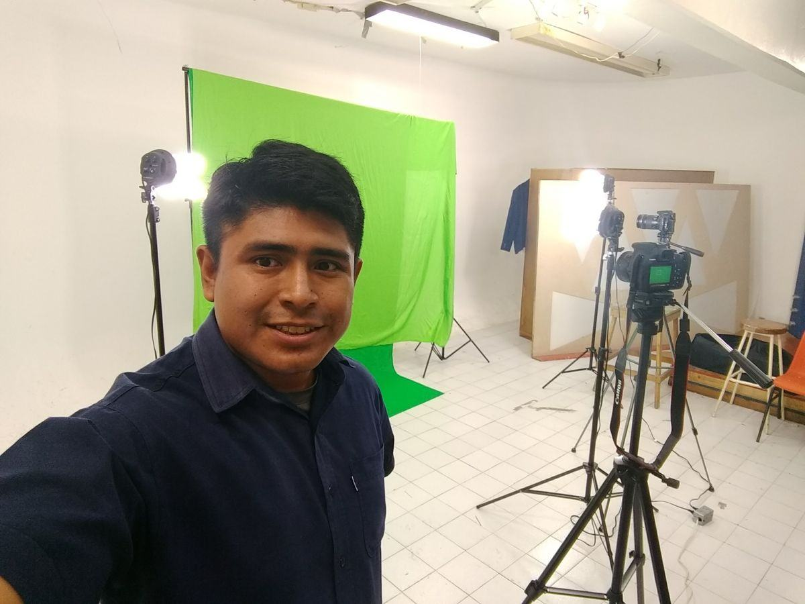
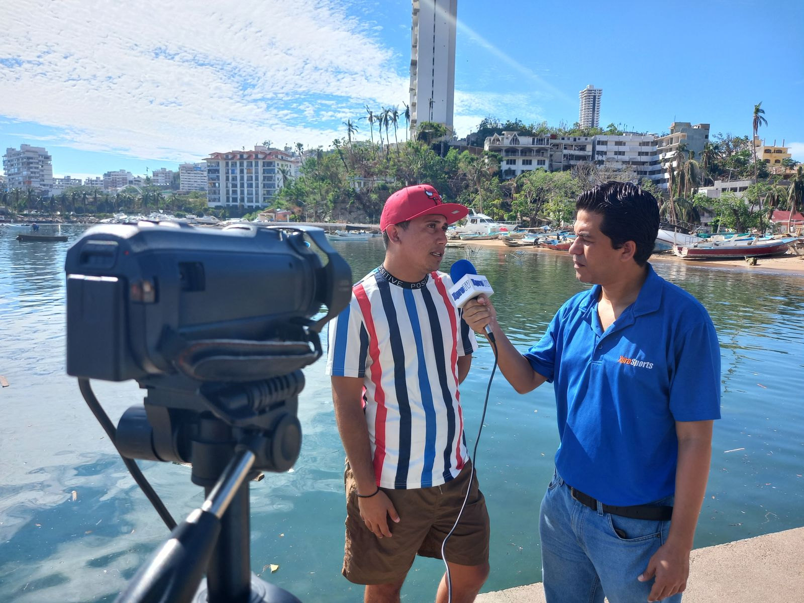
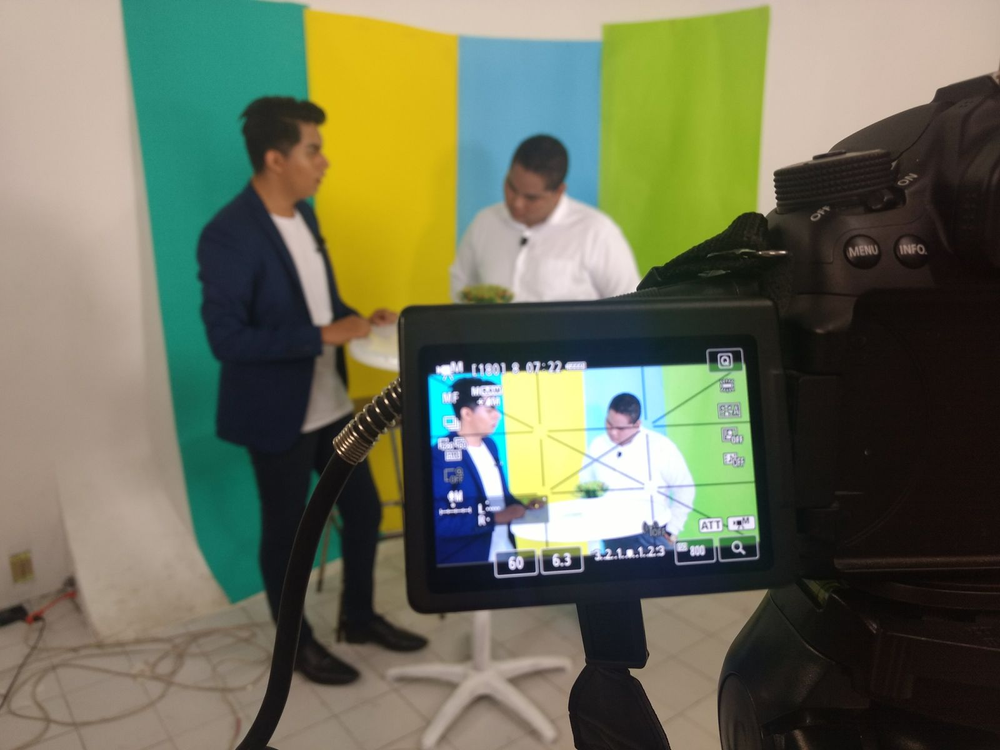
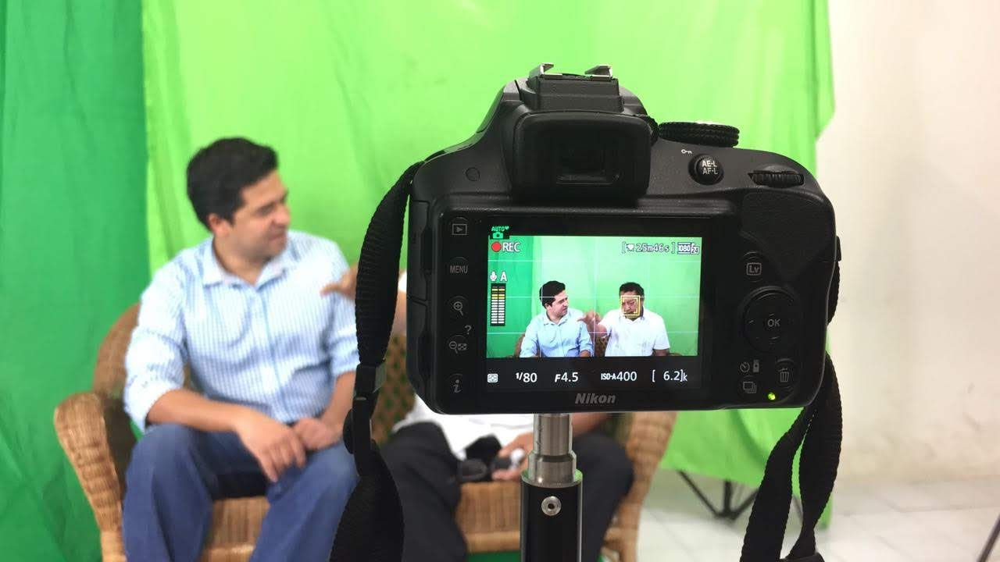

Juan Álvarez Hurtado en la construcción de México

Juan Álvarez Hurtado en la construcción de México
- Con
- David Cienfuegos Salgado
- Casa
- Universidad Americana de Acapulco

Televisión, documental, transmisiones en vivo y contenido digital. Llevo cada proyecto de la idea a la pantalla.

Contenido de alto impacto para televisión, plataformas digitales y formatos comerciales.
Domino el flujo completo de un proyecto: producción en set y campo, operación técnica de transmisiones en vivo, postproducción y diseño publicitario. Tengo experiencia en cabinas de televisión, sets de grabación y dirección de foros multimedia, con un enfoque ágil orientado al ritmo, la narrativa visual y las entregas a tiempo.
Licenciado en Ciencias de la Comunicación por la Universidad Autónoma de Guerrero, con maestría en Comunicación Organizacional.
Concepto, desarrollo y realización de programas, documentales y contenido institucional.
Operación en cabina, control de cámaras y streaming para TV, deportes y eventos.
Edición con ritmo y narrativa para televisión y redes sociales.
Identidad de canal, logotipos, plecas, flyers y publicidad digital.
Documental, televisión y contenido institucional. Haz clic en cualquier proyecto para verlo.


Mi trabajo en el Canal de Televisión ACAtv: producción, redacción y edición de notas y cápsulas informativas.
Participación en material educativo del CICR para estudiantes de Guerrero.
Cabina, control de cámaras, coberturas deportivas y transmisiones por redes sociales.



Producción, redacción y edición de notas y cápsulas para el noticiero diario en broadcast. Operación técnica en cabina y control de cámaras en programas en vivo, cuidando la continuidad de la emisión.
Co-creación y desarrollo de producción del programa televisivo.
Asistencia técnica y soporte operativo para transmisiones televisivas en vivo y eventos deportivos.
Transmisión en directo por redes sociales de eventos, conciertos y activaciones comerciales.
Identidad visual y piezas promocionales para marcas, instituciones y eventos.
Logotipos, plecas, pautas publicitarias y material promocional.
Logotipos, publicidad digital y flyers para conciertos y presentaciones en vivo.
Cartelería digital, flyers promocionales e identidad gráfica integral.
Foros, entrevistas y producciones en campo. Haz clic en una foto para verla completa.
Dirección y captura de fotografía para marcas y negocios.
Video publicitario optimizado para TikTok e Instagram.
Creación de contenido y videos promocionales para eventos.
Doce años en televisoras, universidad, hospitalidad y producción independiente.
Universidad Autónoma de Guerrero
Universidad Americana de Acapulco
MEDIA13 / Centro de Formación Azteca Guerrero
Para marcas, negocios, instituciones y eventos. Escríbeme por WhatsApp y te envío una cotización.
Videos publicitarios, institucionales y entrevistas, de la idea a la entrega.
Streaming de eventos, conciertos y activaciones por Facebook y YouTube.
Videos verticales para TikTok e Instagram y edición de material existente.
Fotografía de producto, marca y eventos para publicidad y redes.
Logotipos, identidad gráfica, flyers y publicidad digital.
Estoy disponible para integrarme a televisoras, productoras, agencias y áreas de comunicación.
Descargar CVRespondo por correo y WhatsApp. Disponible para viajar y cambiar de ciudad.